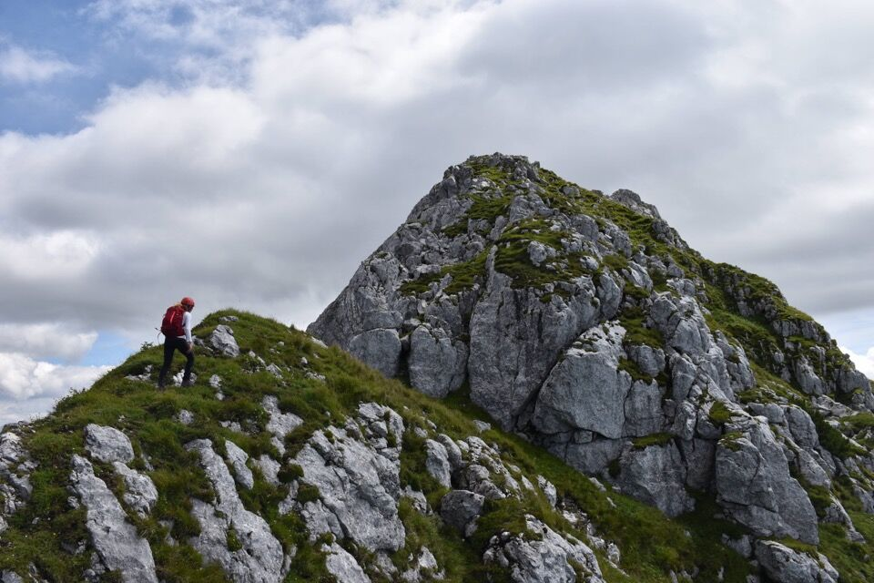
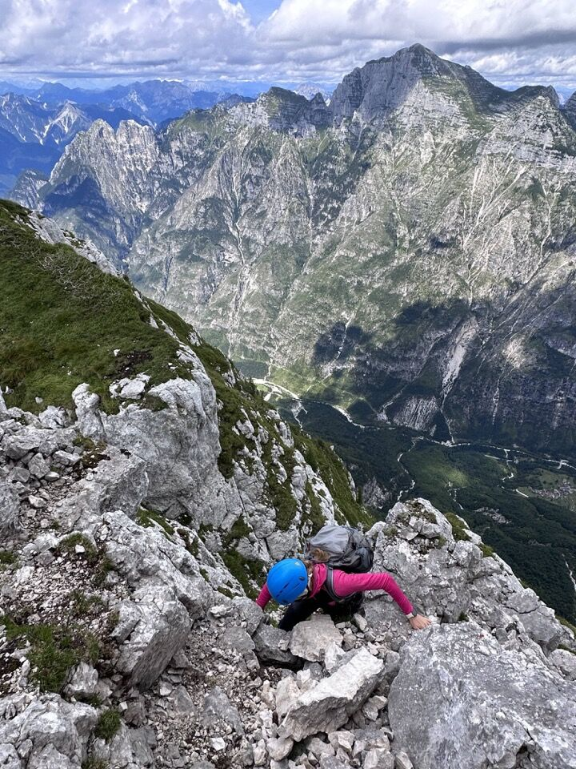
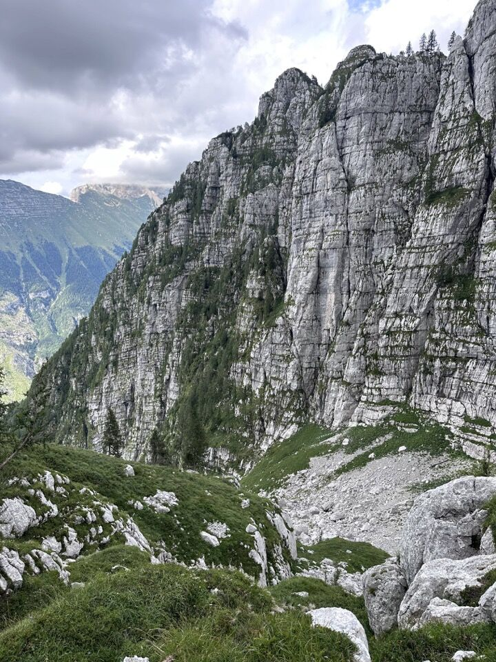
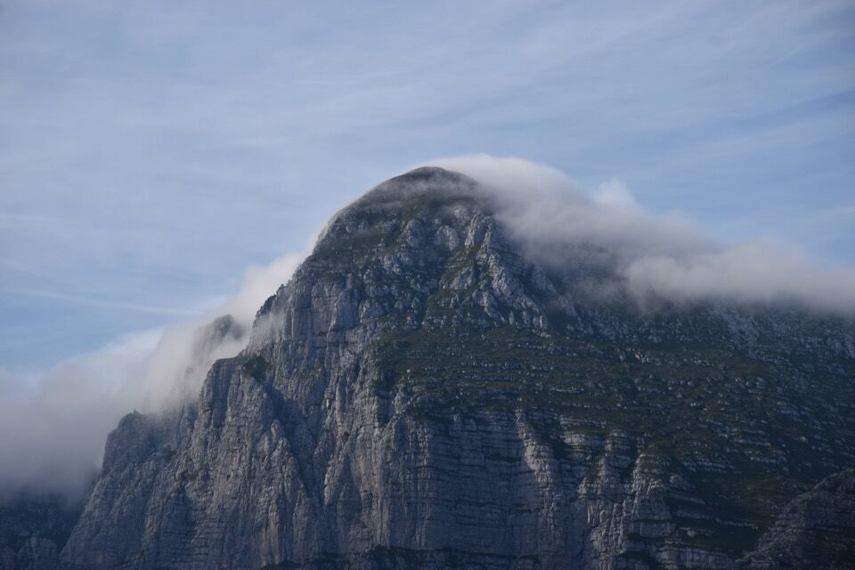

La bella cresta che il Sart protende verso Ovest, a cavallo fra val Resia e val Raccolana, è ben nota nella letteratura alpinistica, ma per qualche motivo risulta assai poco frequentata, ed effettivamente la cresta si trova allo stato originario, senza alcun segno (e non ce n'è bisogno!).
Percorsa già in tempi antichi da cacciatori, il Buscaini la liquida in due righe di descrizione: «Dal Picco di Mezzodì 1866m si segue la cresta con bel percorso, facile e panoramico, aggirando a des. (S) un risalto difficile (ore 2)».
Solitamente l'ascensione viene effettuata partendo dalla val Resia, verosimilmente salendo da Stolvizza a sella Hlabuia con il CAI 643; io invece ho sfruttato l'occasione per percorrere il sentiero CAI 633 che da Pezzèit sale a sella Hlabuia per il versante settentrionale, dato che la morfologia di quel versante, tutto ad erti costoni e più volte da me osservato dal sottogruppo del Cimone, mi incuriosiva molto.
Essendo affezionato agli anelli, mi son detto perché non scendere per sella Blasic, dato che era un altro luogo delle Giulie che volevo visitare.
Si è rivelato chiaramente un giro lunghissimo, di 12 ore più un'ultima ora di penosa strada asfaltata da Tamaròz a Pezzèit (un'altra ora l'abbiamo persa per scendere a Tamaròz - vedi la fine della pagina).
Devo ringraziare A. Piussi, di Saletto in val Raccolana, il quale dopo aver saputo dell'escursione mi ha fornito numerose informazioni supplementari e preziosi toponimi locali non riportati in letteratura.
Partiamo alle 6.30 da Pezzèit: in centro foto si nota chiaramente il costone su cui si snoda la maggior parte del sentiero; il punto cruciale è come montarci sopra.
Inutile dire che un altro motivo per partire dalla val Raccolana anziché dalla val Resia era quello di avere una visuale privilegiata sul versante Sud del sottogruppo del Cimone.
In foto il paese di Patoc sovrastato dalla dorsale percorsa dalla Vie dal Cjamoç al monte Jovèt.
Ottima visuale sul complesso costone dei Sbrici, quasi completamente arso dalle fiamme del disastroso incendio dell'estate 2013. Ho evidenziato il ripiano dove sorgeva lo stavolo dai Sbrici. Tutto a sx la forca de la Puartate; le tre cime centrali sono la cima da lis Miris, il Ciuc di Vallisetta e il Mucul di Vallisetta; sulla dx imponente s'innalza la parete Sud del Cimone.
Due immagini del sentiero di salita, una appena partiti e una quasi arrivati: nella prima una bella cascata, sopra cui bisogna montare attraverso una cengia scavata in roccia; nella seconda, nella Sdrinize dal Caian sotto le pareti del Modeòn (in questo tratto si snoda verso sinistra una traccia tutta da esplorare).

Il Mucul di Vallisetta, diviso dal corpo del Cimone dalla forcje dal Fossâl. Mi chiedo quante persone abbiano messo piede su quella forcella, che da quanto ne so non risulta valicata. L'impervio sperone sotto il Mucul, fra gli abissi dei rio di Malimbérg a sx e del rio Pliz a dx, è il Cjavalòt, orridamente dilaniato dalle fiamme. Sulle vecchie mappe è riportato un sentiero che rimonta tutto lo sperone fino alla sella del Cjavalot sotto le pareti del Ciuc e del Mucul (ove si trovava il Clapusc del Tunco); molto probabilmente di questo sentiero non rimane praticamente nulla, come è successo al sentiero dei Sbrici.
È una grande fortuna che ci siano delle foto di come fosse questo sentiero prima dell'incendio, grazie al Ravanatore.
Piuttosto interessanti, almeno per me, sono i monti Moncussòn e Sflambùrc; volevo già andarci lo scorso inverno, sarà per il prossimo. Quella sorta di cono che si confonde col versante Sud dello Sflambùrc è il Ciuc Cergnàn, le cui vie di salita si trovano relazionate in Trois Neris.
Con una luce davvero bella, il monte Jovèt e il Cjastelat. Finalmente vedo bene il cengione che permette di immettersi nell'alto rio Sbrici! Dal coston dai Sbrici sembra molto peggio.
Ecco una vista complessiva del versante Sud del sottogruppo del Cimone, da sella Hlabuia.
I paesi in basso a sx sono Patoc e Chiout Michêl; quello appena visibile in centro è Chiout Cali.
E infine... forca de la Puartate.
Sto clamorosamente divagando, quindi meglio tornare alla Cresta Indrinizza. Probabilmente si può salire subito sulla cresta, ovvero sul Modeòn, direttamente dalla sella; forse si risparmia anche tempo, ma vai a sapere.

Noi preferiamo seguire la mulattiera per un breve tratto...
...e rimontare il costone Sud del Picco di Mezzodì. Siamo saliti con la speranza di poter traversare in alto un canale erboso alla nostra destra, cosa rivelatesi non possibile; nel punto più alto alcune cenge erbose sembravano girare lo spigolo e portare in cresta, ma l'espozione notevole e alcuni ripidissimi passaggi su erba per raggiungerle ci hanno fatto optare per una ritirata. Siamo quindi scesi e abbiamo attraversato il canale più in basso... poi su alla bene e meglio fino in cresta.
In assenza di chiari riferimenti, montare in cresta è forse più impegnativo del percorrere la cresta! Alcuni passaggi su erba sono delicati.
La Cresta Indrinizza in tutta la sua magnificenza.
Il misterioso Pic di Babe; ho un bel progetto in mente.

La rampa lungo la quale sale la via della Dolina al Cimone. Essa presenta passaggi di II-III, il che fa capire quanto fossero abili, anche su roccia, i cacciatori di val Raccolana. In basso a dx si nota il torrione q1842 che forma la forca del Malpasso, evitata dai valligiani attarverso una esile ed espostissima cengia sul versante Sud.
Ciuc e Mucul di Vallisetta: la valisète è appunto il valloncello compreso fra le due cime.
Segue ora qualche foto della cresta, sempre facile e molto panoramica.
L'unico punto impegnativo è quel torrione che si distingue in foto.
C'è da dire che il camino, circa 4m di II grado, è davvero strettissimo e tutti e tre abbiamo fatto difficoltà a salirci: se non si è magri può diventare insuperabile.
In cima dopo 7 ore dalla partenza, freddo polare nonostante fosse agosto.
Verso il misterioso Calderino Robel, che poi si immette con dei salti nel vallone Blasic. Nel fondovalle si notano Piani di Quà e di Là.
Arriviamo alla sella di Grubia, dove scruto il cengione alla base del Picco di Carnizza: esso permette di raggiungere casera Canin.
Il Cuel Sclâf: in genere si sale per quell'erta striscia erbosa che curva verso destra.
Passiamo per il Foràn da Muss, dove non avevo mai messo piede: devo dire che è davvero un posto unico, bisogna andarci per rendersi conto di tanta bellezza. Merita una gita anche solo per vedere questo altipiano carsico, del tutto simile ad una spugna di roccia.
Raggiunta sella Blasic iniziamo a scendere per la parte alta del vallone, anche questo un luogo magnifico, racchiuso fra le alte pareti del Sart e del Ciuc dal Corvat-Cuel Sclâf.
In discesa nell'alto Vallone Blasic.
La giornata non smette di regalarci emozioni: una bellissima fotografia del Cimone avvolto da soffici nubi.
Ma emozioni anche di altro tipo! Il CAI 646 che collega Tamaròz a sella Blasic era in condizioni disastrose nella parte bassa: ad un certo punto sparisce ogni traccia e pure i segnavia. Sapevo di questa cosa ma contavo nell'esperienza per venirne fuori. Il problema è che quando la traccia scompare ci si trova in una zona piena di salti, in cui non è chiaro dove proseguire. Dopo una buona mezzora di tentativi e scervellamenti, abbiamo deciso di ripiegare verso la traccia nera della Caserutta, che sapevo essere più marcata; solo per un colpo di fortuna nel mentre abbiamo intersecato un segnavia del CAI, che ci ha permesso poi di scendere fino in paese. Sul sito del CAI si legge questo: Sentiero parzialmente agibile. Presenta per buona parte traccia incerta. Adatto ad escursionisti esperti e attrezzati con GPS. Francamente trovo assurdo una cosa del genere, mai sentito da nessuna parte di un sentiero che necessita di GPS (e poi devo dire che anche noi abbiamo tirato fuori il GPS a quel punto, ma mica ci ha aiutato!). Come se non bastasse, il tracciato è errato nelle vecchie mappe Tabacco, cosa poi sistemata.
Ho scritto "era" in quanto poche settimane dopo un volenteroso escursionista che conosco, appassionato della sua valle, ha rifatto i segnavia CAI nel tratto incriminato.
Il punto forse più bello della parte bassa del sentiero è quando si inizia a scendere lungo di un colatoio, increduli dato che poco più avanti c'è un saltone, per poi "magicamente" trovare un passaggio a sinistra...
...che porta su una bella cengia, credo lavorata, che permette di aggirare il salto.
Uno sguardo al vallone Blasic, dopo 12 ore di traversata... e ci attendeva ancora l'ultima ora di penosa strada asfaltata fino a Pezzèit per recuperare la macchina.